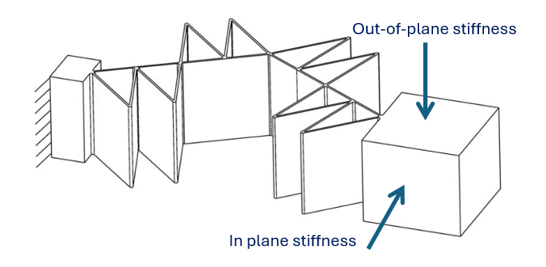

PROJECT IMAGE / CAD RENDER
PROJECTS
Selected engineering work.
[One short sentence about the projects you want to showcase.]

Investigating Spline and Triangular Reinforced Flexures
This project investigates how reinforcement geometry can be used to tune the stiffness behaviour of compliant mechanisms. The study focuses on leaf-spring flexures and the trade-off between in-plane Range of Motion (RoM) and out-of-plane stiffness.
01
Project Overview
Abstract
This study analyses the effect of triangular and spline reinforcements on leaf springs. It focuses on maximizing the in-plane displacement referred to as the Range of Motion (RoM), while also maximizing the out-of-plane stiffness. This was achieved using finite element simulations in SolidWorks and MATLAB. A reference model was also simulated for different triangle heights for comparison. Finally, 3D-printed models were experimentally tested to fully understand the design. It was found that the RoM can be increased by 6% if some of the triangular structures are replaced with bows. This, however, negatively impacts the stiffness, resulting in a decrease of 22%. A trade-off between RoM and buckling may therefore be acceptable depending on the application.
What I Achieved
Through this project, I developed a deeper understanding of compliant mechanisms and how geometry can be used to control where a mechanism is stiff and where it remains flexible. I investigated how triangular and curved reinforcement structures influence the stiffness and deformation behaviour of leaf-spring flexures.
I used finite element simulations to evaluate different geometries and reinforcement heights, developed a simplified MATLAB optimisation model, and compared the numerical results with physical 3D-printed prototypes. This allowed me to study the trade-off between increasing the desired in-plane Range of Motion and limiting undesired out-of-plane deformation.
Engineering Insight
A key insight from the project was that stiffness does not simply need to be increased or decreased globally. The geometry of a compliant mechanism can be designed to provide high stiffness in undesired directions while remaining flexible in the desired direction.
The results showed that triangular reinforcements provide higher resistance against buckling, while bow-shaped reinforcements introduce additional flexibility. Combining the two therefore provides a way to tune the mechanism to application-specific requirements.
Tools & Methods
SolidWorks FEM, MATLAB optimisation, compliant mechanism design, flexure design, parameter variation, 3D printing and experimental testing.
OPTIONAL VIDEO / IMAGE / CAD
05
Project page structure
Problem
[What had to be solved?]
Approach
[Concepts, design decisions, calculations, simulations.]
Design
[CAD, drawings, mechanism, materials, manufacturing.]
Validation
[Testing, measurements, results and comparison to requirements.]